Published: 2022-10-06
Source link: https://www.cnphotos.net/academy/show-98.html
The word mood is very popular now, especially when taking photos. Mood adds to the appeal of a photo. So how can beginners quickly take this kind of photo? Below I share 7 tips.
A photo of a back looks more lonely, sad, and thoughtful, and that state feels full of story.
For back shots, keep these points in mind:
(1) Black and white is a shortcut. Because the tones are gray and dim, the color itself seems to tell an old story. See the image above.
(2) Contrast. Even if the whole photo is not black and white, make it grayish overall. The subject in bright clothes then looks more lonely. See the image below.
(3) Pose. Shoot only the back. The subject can look down in thought or gaze into the distance.
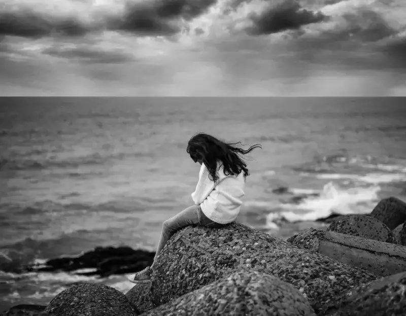
A shadow photo is like a shot in a film, as if setting up and telling something, so it adds mood.
For shadows, keep these points in mind:
(1) For a silhouette, shoot from the side. The side silhouette shows the outline more clearly. If the person is walking, leave space in front of the direction they walk.
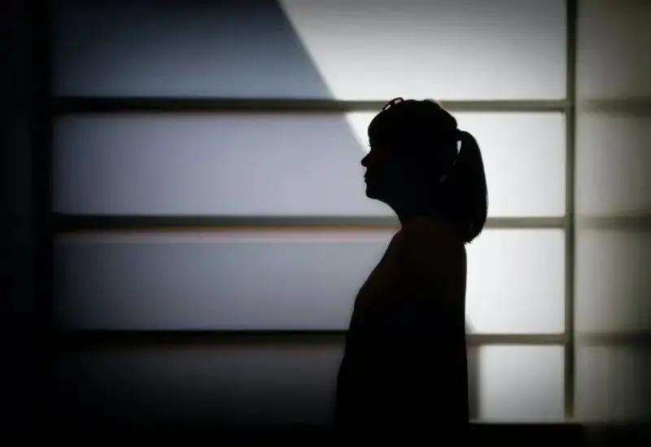
(2) For shadows, do not make them too large or too dense, and let there be light. Then the photo is more dappled and interesting.
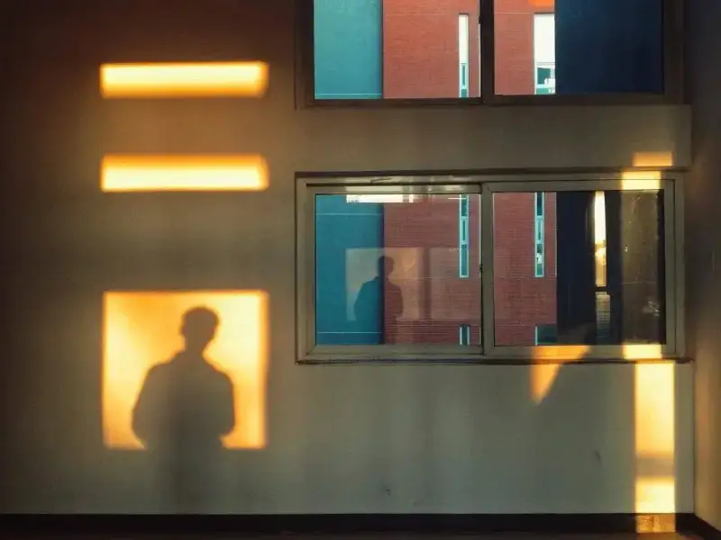
If you shoot a person and the face is visible, make their eye gaze more story-like. When a viewer looks at a photo with a person, they notice the person first, and when they notice the person, they notice the eyes first.
For the eye gaze, keep these points in mind:
(1) Guide. A story-like gaze does not come on demand. If the person is not a professional model, the photographer must guide them. Let them not look at the lens, gaze into the distance, and be quiet for a while. Guide them to think, recall, and remember someone, and the story-like gaze appears.
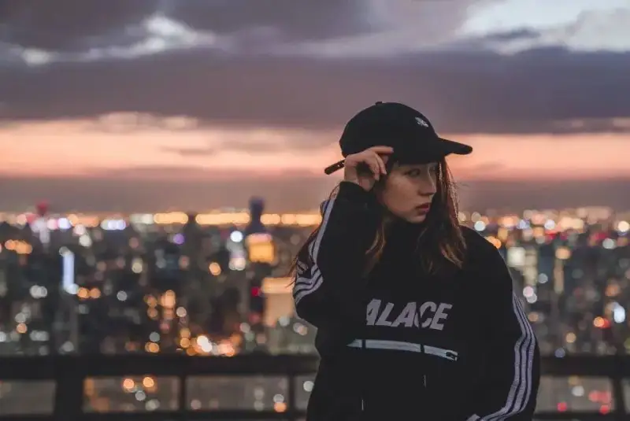
(2) Be natural. In the image below, the staging is too obvious. No one suddenly turns around mid-walk to do this pose. If it is unnatural and clearly staged, the story feel is gone.
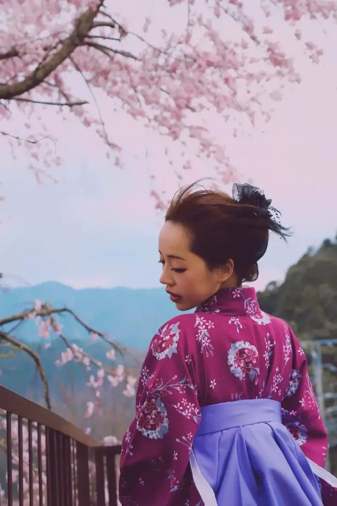
4. Shoot small corners of life
Ordinary corners of life also bring back similar scenes in the viewer's memory. The photo and the viewer resonate, and the story feel appears.
For corners, keep these points in mind:
(1) Shoot corners with an old feel. An old feel brings out the story and mood. With light and shadow, the photo can be more beautiful.
(2) Shoot details. Small details make the viewer feel as if they are in the setting, add a sense of place, and bring out the story feel.
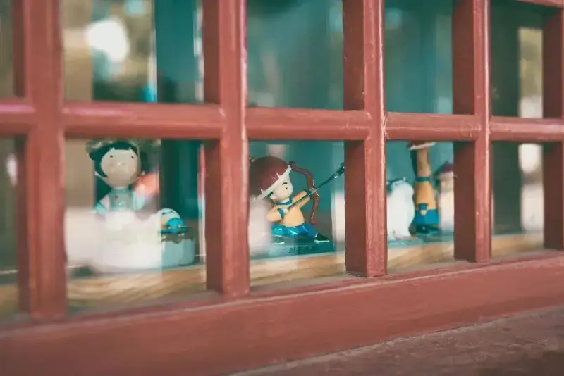
A photo with depth and a blurred foreground has stronger mood. The blurred foreground is like the setup before a story. The story unfolds, and the eye moves forward through the depth to the sharp subject.
For depth and blur, keep these points in mind:
(1) The distance between the far view and the blurred foreground subject must be enough. With enough distance, the blur works well. With enough depth, the eye travels longer, and the story feel grows.
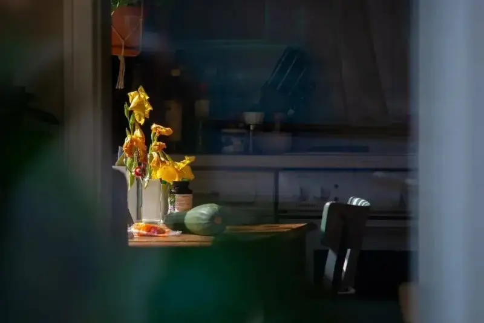
(2) Sharpness. The blurred foreground is the setup, so the far subject must be sharp. Then the key point stands out, and the story in the story has a place to land.
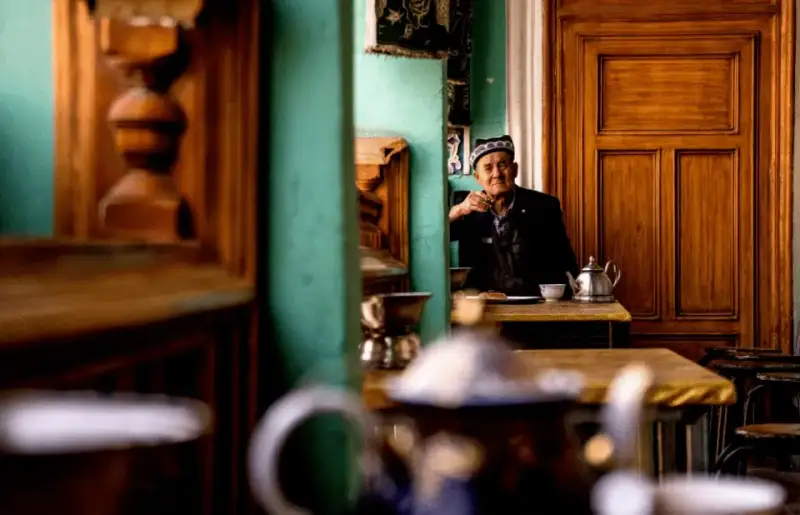
A frame with contrast has more tension. A photo with a person already has a story feel. Add contrast, and the photo gains more emotion.
For contrast, keep this point in mind:
Light and dark contrast. There are many kinds of contrast in photography, but light and dark shows the story feel best. In the image above, it is late at night, the distant lights are bright, and the person is alone out at this hour. There must be a story.
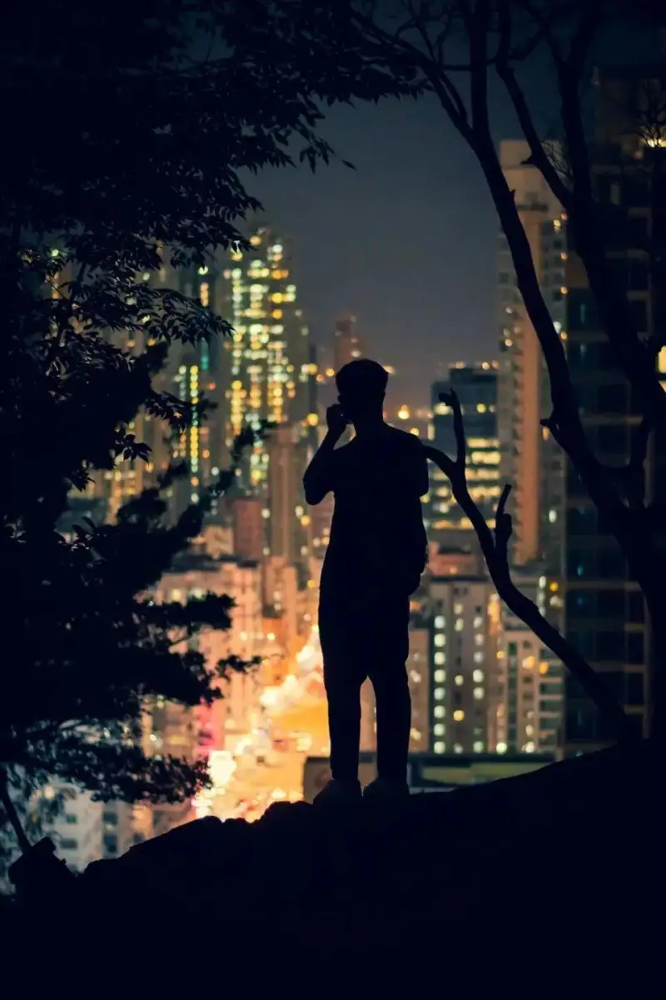
7. Shoot light
Some photos stress shadow, and some stress light. All the tips above can be used together. The two photos below both combine several tips:
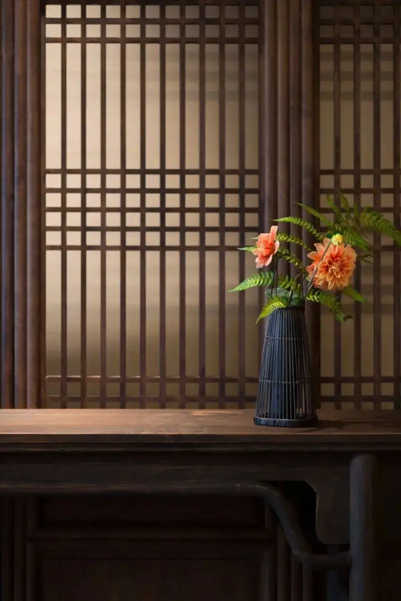
The corner with light (above), and the back with light (below). The corner and the back already carry mood, and the light acts as a fine decoration and accent.
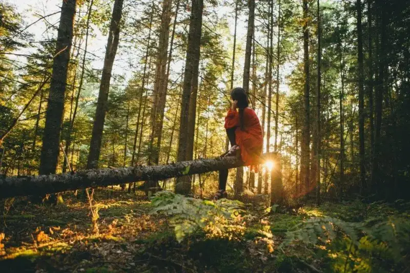
Mood and story photos basically rely on the tips above. Practice them in your own time. They help a lot in improving your photography.